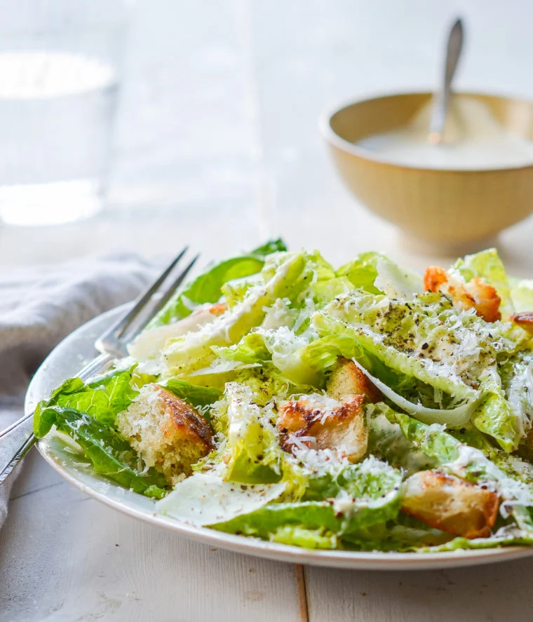

Caesar Salad Dressing

This is an easy, quick, and tasty salad dressing, thats cheaper to make than buy, and tastes better. This should make about 6-7 servings and is good hot or cold.
- 3 Tbls minced Garlic from a jar
- 1 Tbls Anchovy paste
- Juice from 1 Lemon
- 1 tsp Dijon mustard
- 1 tsp Worcestershire sauce
- 1 heaping cup of Dukes or Homemade mayo
- 3/4 cups freshly grated Parmigiano-Reggiano (dont know about using the powder but most all shreads turn out well)
- 1/4 tsp salt
- 1/4 tsp freshly ground black pepper
- In a medium bowl, whisk together the garlic, anchovy paste, lemon juice, Dijon mustard and Worcestershire sauce. Add the mayonnaise, Parmigiano-Reggiano, salt and pepper and whisk until well combined. Taste and adjust to your liking. The dressing will keep well in the fridge for about a week.
Home